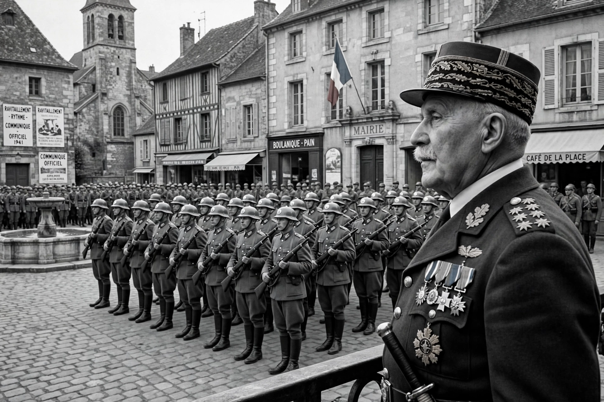

Vichy France
| French State (État français) | |
|---|---|
 | |
| Official name | French State (État français) |
| Period | 10 July 1940 – 9 August 1944 |
| Capital | Vichy (de facto); Paris de jure |
| Head of state | Marshal Philippe Pétain |
| Key figures | Pierre Laval; Admiral François Darlan; René Bousquet |
| Motto | Travail, Famille, Patrie ("Work, Family, Fatherland") |
Vichy France (French: Régime de Vichy) is the common name of the French State (État français) headed by Marshal Philippe Pétain during the Second World War. Established after France's defeat by Nazi Germany and the armistice of 22 June 1940, the regime governed the unoccupied southern "free zone" from the spa town of Vichy while Germany occupied the north and Atlantic coast; after November 1942 Germany occupied the whole country, and Vichy continued as a largely puppet administration until the Liberation in 1944.
Establishment
Following the collapse dramatised by the Dunkirk evacuation and the fall of Paris, the government of Paul Reynaud resigned and Pétain, the aged hero of Verdun, sought an armistice. On 10 July 1940 the National Assembly, meeting at Vichy, voted full powers to Pétain by 569 to 80, effectively ending the Third Republic. Pétain proclaimed a "National Revolution" under the motto Work, Family, Fatherland, blaming the defeat on the decadence of the Republic and promoting authoritarian, traditionalist and anti-modern values.
Collaboration and persecution
Hoping to secure France's place in a German-dominated Europe, Pétain met Hitler at Montoire in October 1940 and announced a policy of collaboration. The regime enacted its own antisemitic legislation — the Statut des Juifs of October 1940 and June 1941 — excluding Jews from public life, and French police organised roundups, most notoriously the Vel' d'Hiv arrests of July 1942 in Paris, in which over 13,000 Jews, including 4,000 children, were seized. In total some 76,000 Jews were deported from France, most to Auschwitz; few survived. From 1943 the Service du travail obligatoire sent hundreds of thousands of French workers to Germany, driving many young men into the Resistance maquis, while the regime's Milice paramilitary fought a civil war against the Resistance alongside the Gestapo.
End and legacy
After the Allied landings in Normandy in June 1944 and in Provence in August, Pétain and his ministers were taken by the Germans to Sigmaringen in Germany as a government-in-exile. The Provisional Government of Charles de Gaulle declared all Vichy's acts null and void. Pétain was tried for treason in 1945, sentenced to death, and — on account of his age — imprisoned for life on the Île d'Yeu, where he died in 1951. The extent of Vichy's willing collaboration, long softened by the post-war "résistancialiste" myth, became a central and painful theme of French historiography after Robert Paxton's Vichy France: Old Guard and New Order (1972); in 1995 President Jacques Chirac formally acknowledged the French state's responsibility for the Vel' d'Hiv roundup.